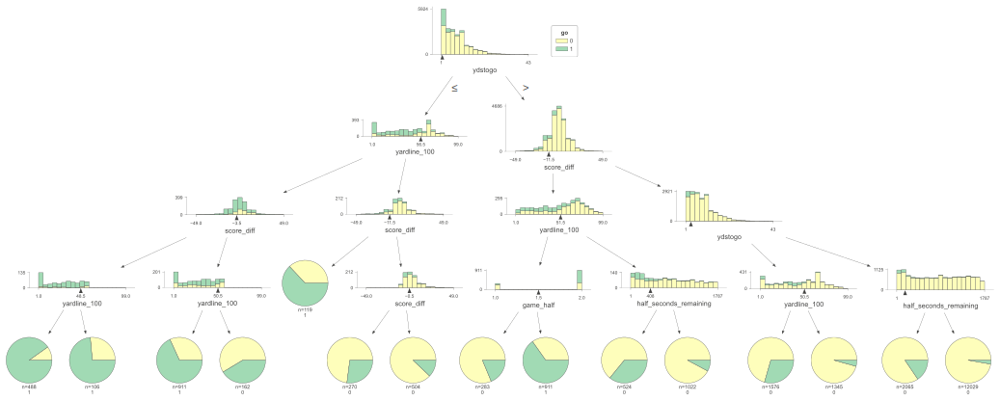
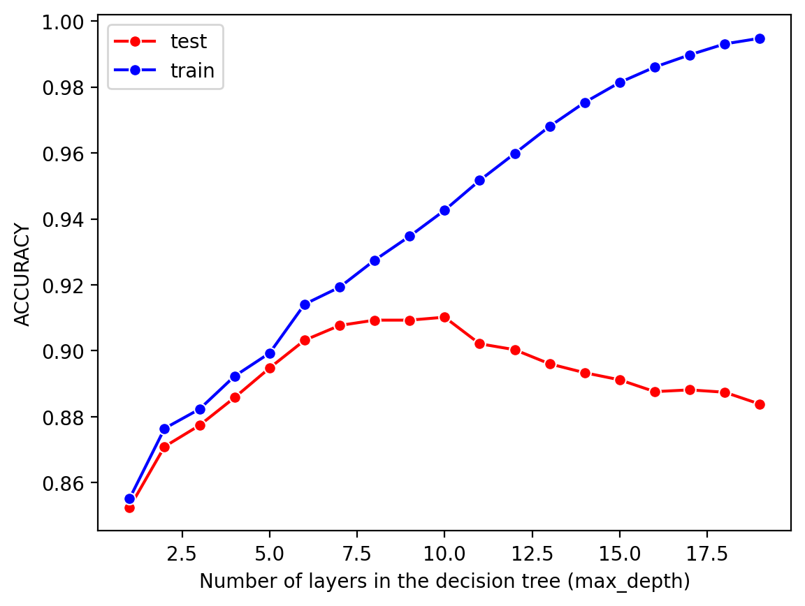
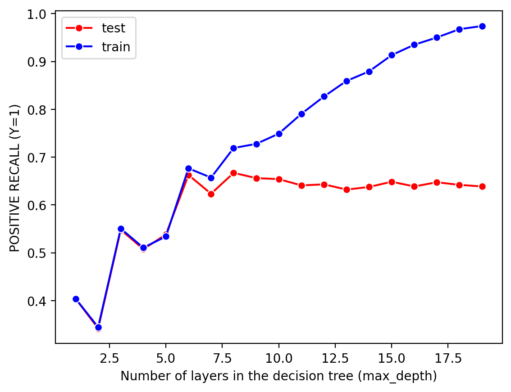

%config InlineBackend.figure_format ='retina'# Make visualizations look good#%config InlineBackend.figure_format = 'svg' %matplotlib inlineimport pandas as pdimport seaborn as snsimport numpy as npfrom sklearn.tree import DecisionTreeClassifierfrom sklearn.metrics import accuracy_score, precision_score, recall_score, confusion_matrix, ConfusionMatrixDisplayimport matplotlib.pyplot as pltimport dtreevizrandom_state =621
Methods
The end goal of making these decision trees is to model the decision making process for each coach. To help us better understand the individual trees, we will start by making an “average” baseline tree that is built using data from every coach. This classification tree will predict whether or not a coach decides to go for it on a given 4th down scenario. It may help to try this using every 4th down play, as well as with some filters imposed on the data to extract more informative, higher leverage scenarios.
Basic Data Exploration
We will take another look at our data just so we are familiar with the parameters we are working with.
dtypes min mean max
game_half int64 1 1.500789 2
half_seconds_remaining int64 1 813.952714 1789
ydstogo int64 1 7.788377 46
yardline_100 int64 1 49.846885 99
score_diff int64 -49 -1.021367 49
go int64 0 0.158385 1
I have only selected parameters that would be readily available simply by observing the game state at the time of decision. Essentially what this means is I am leaving out all of the win probability parameters as those result from calculations that would be hard to do on the fly, and would be difficult to interpret for our purposes, as we want to see how coaches respond to certain game situations, not how they respond to win probability situations. It is possible that they do not even look at those variables and we know for sure that they pay attention to those on-field parameters.
Code
count_0 =sum(df["go"] ==0)count_1 =sum(df["go"] ==1)total = count_0 + count_1print("Number of not go points:", count_0, count_0/total)print("Number of go points:", count_1, count_1/total)
Number of not go points: 23476 0.8416146841614685
Number of go points: 4418 0.15838531583853158
As expected, there are far more instances of coaches not going for it than coaches going for it.
Baseline Model
# insert code for a random classifier
Isolate Inputs/Output
# Split data into features and targetX = df.drop("go", axis=1)Y = df["go"]# Split data into train and test setsfrom sklearn.model_selection import train_test_splitx_train, x_test, y_train, y_test = train_test_split(X, Y, test_size=0.2, random_state=621)# Check size of train and test splitsprint("x_train shape:", x_train.shape)print("y_train shape:", y_train.shape)print("x_test shape:", x_test.shape)print("y_test shape:", y_test.shape)
Negative recall and precision are very good, meaning our model is good at predicting when coaches will not go for it, which makes sense. Positive recall and precision, on the other hand, are not nearly as good. It is much harder to predict when coaches will go for it than when they will not go for it.
/Users/tsigall/miniforge3/envs/r-env/lib/python3.11/site-packages/sklearn/base.py:439: UserWarning: X does not have valid feature names, but DecisionTreeClassifier was fitted with feature names

Hyper-parameter Tuning
Code
# sample code from lab assignment for parameter tuning# samples to tune: min_samples_leaf, min_samples_split, max_depth, others?test_results=[]train_results=[]for num_layer inrange(1,20): model = DecisionTreeClassifier(max_depth=num_layer) model = model.fit(x_train, y_train) yp_train=model.predict(x_train) yp_test=model.predict(x_test)# print(y_pred.shape) test_results.append([num_layer, accuracy_score(y_test, yp_test), recall_score(y_test, yp_test,pos_label=0), recall_score(y_test, yp_test,pos_label=1)]) train_results.append([num_layer, accuracy_score(y_train, yp_train), recall_score(y_train, yp_train,pos_label=0), recall_score(y_train, yp_train,pos_label=1)])
Code
plt.cla()ax = sns.lineplot(x=np.asarray(test_results)[:,0], y=np.asarray(test_results)[:,1], color="red", marker="o", label="test")sns.lineplot(x=np.asarray(train_results)[:,0], y=np.asarray(train_results)[:,1], color="blue", marker="o", label="train")ax.set(xlabel="Number of layers in the decision tree (max_depth)", ylabel="ACCURACY")plt.legend()plt.show()plt.cla()ax = sns.lineplot(x=np.asarray(test_results)[:,0], y=np.asarray(test_results)[:,3], color="red", marker="o", label="test")sns.lineplot(x=np.asarray(train_results)[:,0], y=np.asarray(train_results)[:,3], color="blue", marker="o", label="train")ax.set(xlabel="Number of layers in the decision tree (max_depth)", ylabel="POSITIVE RECALL (Y=1)")plt.legend()plt.show()


8 layers appears to be the optimal max_depth parameter.